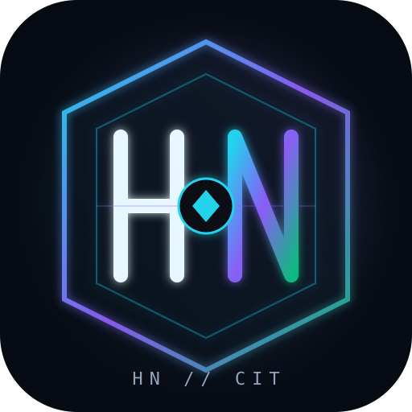
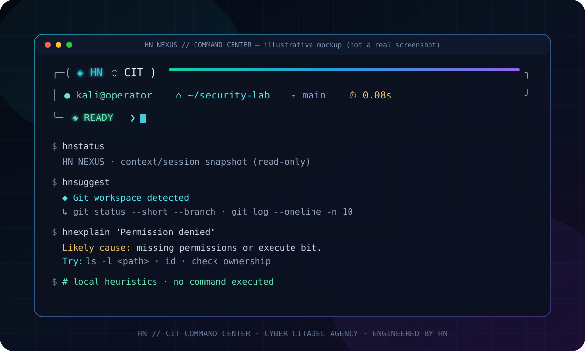

⌘
HUD / PROMPT
Three-row responsive HUD
An event-driven ZSH prompt with identity, context, and status rows that adapts to terminal width and session state.

HN NEXUSHN // CIT · COMMAND CENTERENGINEERED FOR CONTROL. DESIGNED FOR PRECISION.
A cinematic, context-aware ZSH command environment for Kali Linux — combining a responsive three-row HUD, visual profiles, on-demand operator utilities, and recovery-aware setup under one unified identity.
Local-first. Explicitly invoked. Transparent in behavior and limitations. Crafted by Hani Khaled Nasser Al-Nasiri — Cybersecurity Student, Al-Razi University.
HN NEXUS enhances the interactive terminal with a responsive HUD, practical utilities, and clear guidance — while preserving native command behavior and keeping every action user-invoked.
An event-driven ZSH prompt with identity, context, and status rows that adapts to terminal width and session state.
Automatic rotation and pinnable profiles via hnstyle, with Nerd Font detection and readable fallbacks.
hnsuggest, hnhistory-search, hnexplain, and hnwhy provide heuristic guidance — never auto-executed.
Inspect files, logs, processes, services, containers, and listening sockets with explicit commands and clear scope.
hnoutput, hnnet, and hnanalyze classify text you provide — no scanning, capture, or connections.
Guided setup, timestamped backups, verification helpers, and rollback paths designed to reduce installation risk.
Interactive wrappers enhance readability in the terminal while preserving native behavior for pipes, redirections, and scripting contexts. Bypass anytime with command <name>.

This is a high-quality SVG preview for presentation. Add genuine, privacy-scrubbed Kali screenshots in assets/screenshots/ before final release claims.
hnhelp, hnmenu, and hnsearch to find commands and built-in guidance.hnstatus, hnprism, and hnsuggest for local, advisory insights.hncat, hnlog, hnports, hnservices) when needed.hnoutput, hnanalyze, or hnexplain.HN NEXUS is structured to keep the interactive core, HUD, utilities, and recovery concerns understandable, modular, and maintainable.
ZSH entry, hooks, completion, correction, and prompt rendering.
Three-row responsive geometry, palettes, context markers, Git/runtime/status.
Explicit hn* tools, viewers, analyzers, and safe interactive wrappers.
Guided install, backups, rollback scripts, diagnostics, and test coverage.

See Architecture documentation for detailed component responsibilities and boundaries.
From first install to advanced workflows — the project includes detailed, behavior-accurate documentation and publishing guidance.
Run from the extracted project directory as a normal user (no sudo). Review scripts first and keep independent backups.
Validate environment without changing files.
./setup.sh --check
See the guided actions before applying.
./setup.sh --dry-run
Install core (and optional XFCE visual on supported X11 sessions).
./setup.sh
Open a new ZSH session and confirm.
hnhelp && hnstatus && hndoctor
Cybersecurity Student — Al-Razi University · GitHub @hhh2006
HN NEXUS is built to make the terminal clearer, more expressive, and more recoverable — without surrendering user agency. Explore the source, read the docs, and deploy it on your terms.